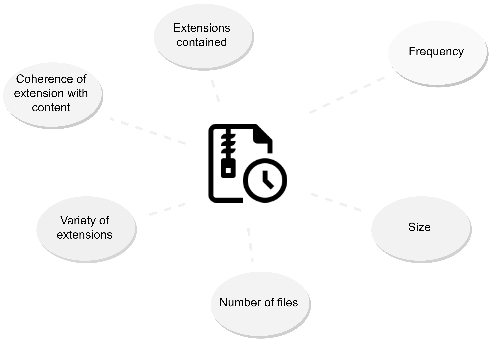
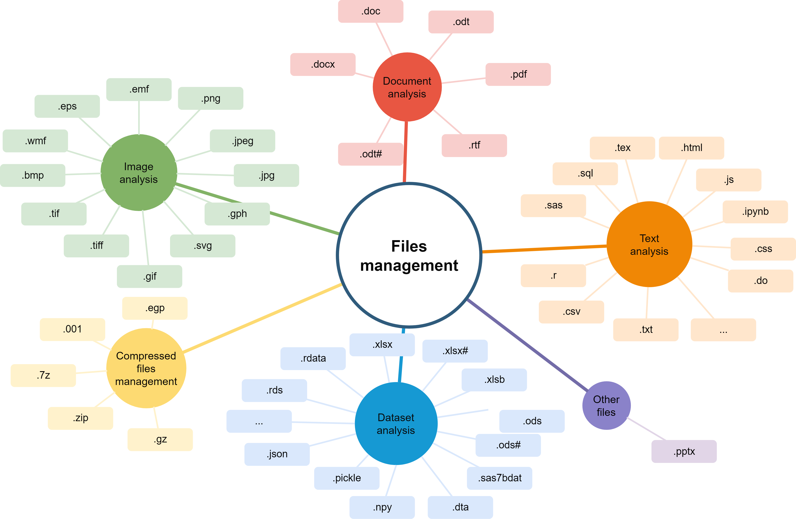
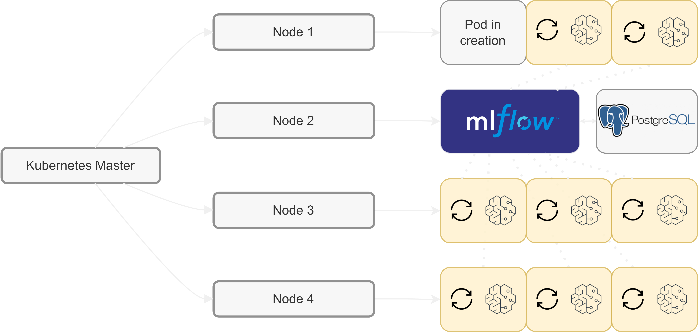
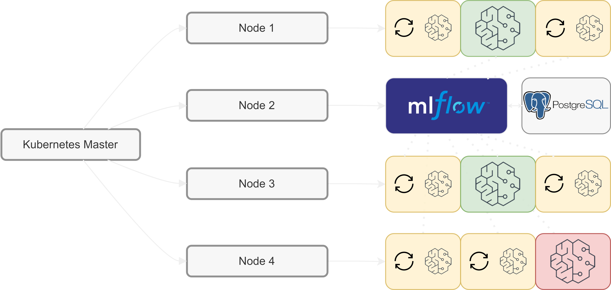
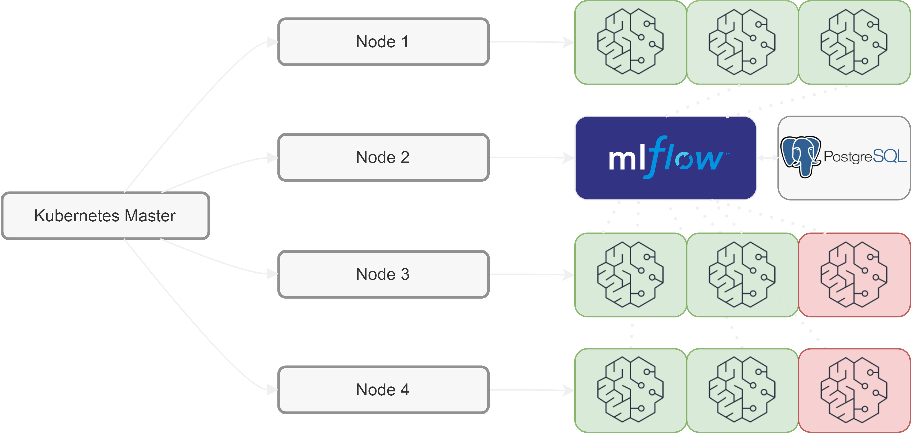
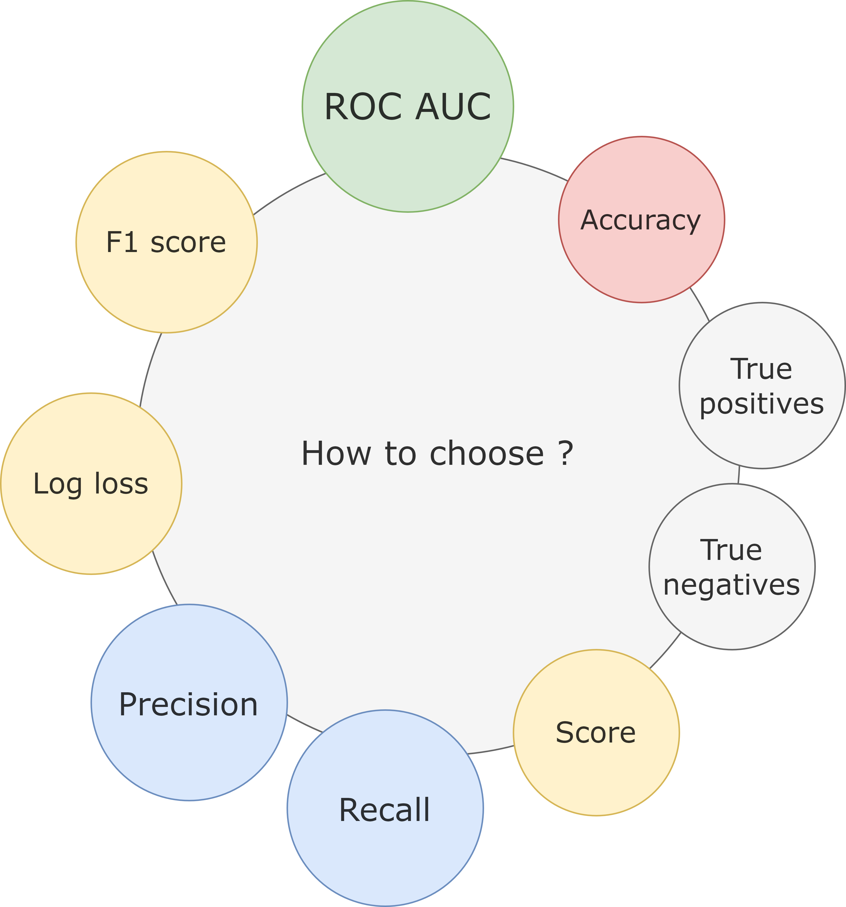
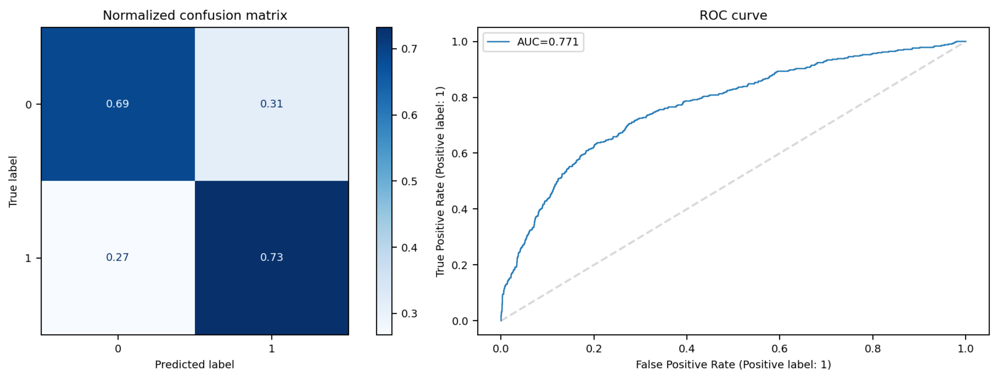

A mixed-method to check data outputs from research works
Remy Marquier - Titouan Rigaud
Eric Debonnel - Florian Sallaberry - Pengfei Liu
Context of our study
Welcome to the world of output checking !
(Again, for the fifth time today)
Manual system

What do we need to build to automate it ?
Theoretical semi-automated system

The challenges
- Generate numerical variables from zip folders
- Train (many) models
- Evaluate and measure performance
- Assemble everyting together in a single system
Feature engineering
A magic spell capable of transforming a zip containing files to ... variables ?
Challenge 1
Metadata
Files
Training models on these features
A gentle introduction to parallel architectures
Challenge 2 and 3
Do you Kubernetes ?
Training models



We can compare the models
| Model | Learn Rate | Depth | Leaves | Estimators | FN | FP | TN | TP | ROC-AUC | score |
|---|---|---|---|---|---|---|---|---|---|---|
| 1 | 0.07 | 4 | 10 | 200 | 113 | 994 | 2182 | 309 | 0.771 | 0.69 |
| 2 | 0.07 | 4 | 10 | 250 | 118 | 964 | 2212 | 304 | 0.770 | 0.70 |
Our proposal of solution
Assembling all pieces together
Challenge 4
Implementation

Performance of the model
Does it actually work ?
Sort of ... I guess
Metrics
Performance
In other words :
Controlling 1 export out of 3 allows to obtain 75% of the total exports that needs to be rejected
What variables are important to predict ?
That's a secret, but we know how to compute them
Future work
"I need to keep my job, please !"
(My boss was supposed to be in the room)
Continous training
- Detecting data shifting
- Labelling the data correctly
Other ideas
- Training a model file by file (350k files labelled available)
- Using more data from automatic controls
Merci !
Contact : titouan.rigaud@casd.eu